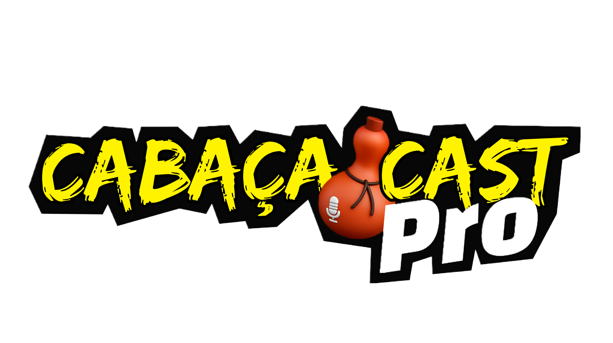

Porque todo mundo tem uma linda história e pode contá-la.

Assistam a Live com CASA VIDA
Introdução
CASA VIDA
A Casa Vida I – Saúde Física e Psicológica está localizada no endereço: Rua Augusto Batista de Siqueira, Quadra 08, Lote 243, Parque Anchieta, Silvânia, Goiás, Brasil, CEP 75180-000.
Este espaço desempenha um papel vital na comunidade ao oferecer suporte e serviços essenciais voltados ao cuidado da saúde física e mental de pessoas em situação de vulnerabilidade.
Se você busca informações, deseja contribuir ou precisa dos serviços oferecidos, pode visitar diretamente a Casa Vida I nesse endereço. A instituição é um símbolo de esperança e cuidado em Silvânia, sendo acessível para a comunidade local e circunvizinha.
O trabalho realizado pela Casa Vida I inclui atendimentos médicos, terapêuticos e psicológicos, promovendo a prevenção e o tratamento de doenças físicas e transtornos emocionais. A instituição se destaca pelo atendimento humanizado, realizado por uma equipe multidisciplinar de profissionais como médicos, psicólogos, assistentes sociais e terapeutas, que oferecem atenção personalizada para cada caso.